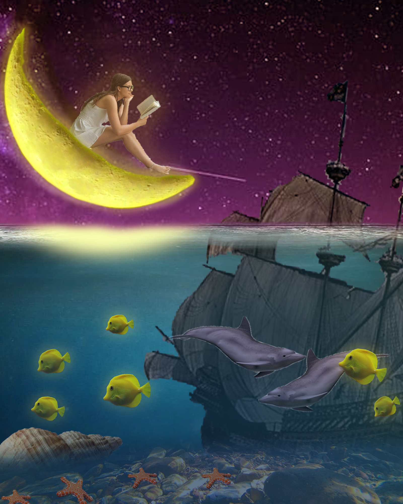
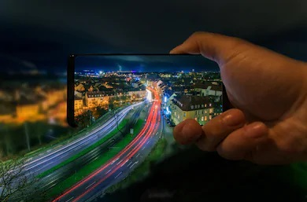

FOTOŠOP

Adobe Photoshop je uređivač rasterske grafike koji je razvio i objavio Adobe Inc. za Windovs i macOS . Prvobitno su ga kreirali 1988. godine Thomas i John Knoll . Od tada je softver postao industrijski standard ne samo u uređivanju rasterske grafike , već i u digitalnoj umetnosti u celini. Ime softvera je tako postalo generički zaštitni znak , što je dovelo do njegove upotrebe kao glagola (npr. „To photoshop an image“, „ photoshopping “ i „ photoshop competition “), iako Adobe odvraća takvu upotrebu.Photoshop možete menjati i komponuje rastera u više slojeva i podržava maske , alfa kompozitnost i nekoliko modela boja , uključujući RGB , CMIK , CIELAB , spot boje , i DUOTONE . Photoshop koristi sopstvene formate PSD i PSB datoteka da bi podržao ove funkcije. Pored rasterske grafike, Photoshop ima ograničene mogućnosti uređivanja ili prikazivanja teksta i vektorske grafike (posebno putem isecanja za poslednje), kao i 3D grafiku i video .
Funkcionalnost Photoshopa može se proširiti dodatnim programima nazvanim Photoshop dodaci.Adobe stvara neke dodatne dodatke, kao što je Adobe Camera Rav, ali nezavisne kompanije razvijaju većinu dodataka, prema Adobeovim specifikacijama. Neki su besplatni, a neki komercijalni softver. Većina dodataka radi samo sa Photoshop-om ili Photoshop-kompatibilnim hostovima, ali nekoliko njih se može pokrenuti i kao samostalne aplikacije.Postoje razne vrste dodataka, kao što su filtriranje, izvoz, uvoz, izbor, korekcija boja i automatizacija. Najpopularniji dodaci su dodaci za filtere (poznati i kao dodaci od 8bf ), dostupni u meniju Filter u Photoshopu. Dodaci za filtriranje mogu ili izmeniti trenutnu sliku ili stvoriti sadržaj. Ispod su neke popularne vrste dodataka i neke poznate kompanije povezane sa njima:
- Dodaci za korekciju boje (Alien Skin Softvare, Nik Softvare, OnOne Softvare,Topaz Labs Softvare,The Plugin Site,itd.)
- Dodaci za specijalne efekte (Alien Skin Softvare, Auto FKS Softvare, AV Bros., Flaming Pear Softvare,itd.)
- Dodaci za 3D efekte (Andromeda Softvare,Strata,itd.)
Adobe Camera Rav (poznat i kao ACR i Camera Rav) je specijalni dodatak, koji Adobe isporučuje besplatno, a koji se prvenstveno koristi za čitanje i obradu sirovih datoteka slika, tako da Photoshop može obrađivati rezultujuće slike.Takođe se može koristiti iz Adobe Bridge-a .
Uređivanje slika obuhvata procese menjanja slika , bilo da se radi o digitalnim fotografijama , tradicionalnim foto-hemijskim fotografijama ili ilustracijama . Tradicionalno analogno uređivanje slika poznato je kao retuširanje fotografija , koristeći alate kao što je vazdušna četka za modifikovanje fotografija ili uređivanje ilustracija bilo kojim tradicionalnim umetničkim medijem . Grafički softverski programi, koji se mogu široko grupisati u vektorske grafičke urednike , rasterske grafičke urednike i 3D modelere, su primarni alati pomoću kojih korisnik može manipulisati, poboljšati i transformisati slike.
